10 Nov 2008, Dryden, TX
I rode through a lot of empty, beautiful country today. I got started reasonably early—8:30 or so—but after lunch my tailwinds became headwinds & I was unable to ride as far as I'd hoped.
I stopped in Langtry for lunch & made a quick visit to the Judge Roy Bean Museum. He was quite the character. A couple folks asked me about my trip, but that was practically the only people I talked to all day.
First thing this morning I crossed the Pecos River, which was incredibly beautiful. It's surrounded by 100+ ft. walls that are sheer drops to the river. Made me wonder if it was climbable . . .
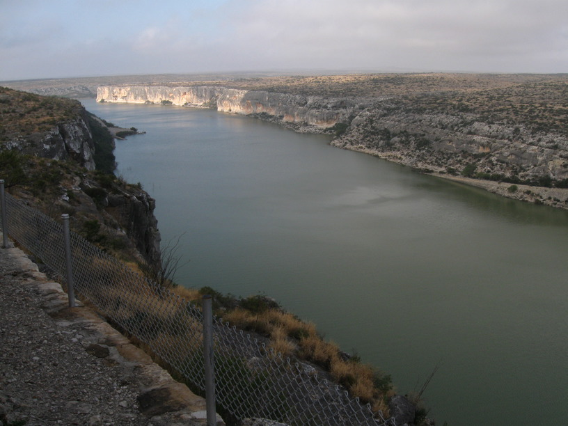
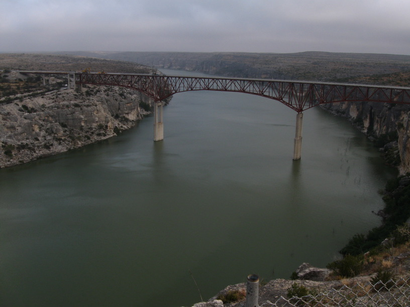
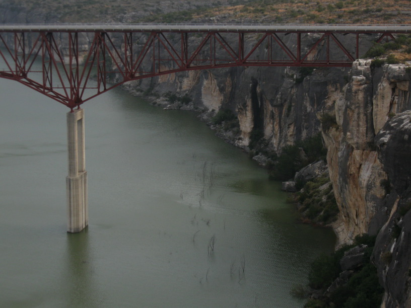
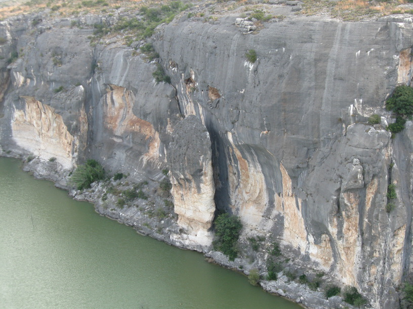
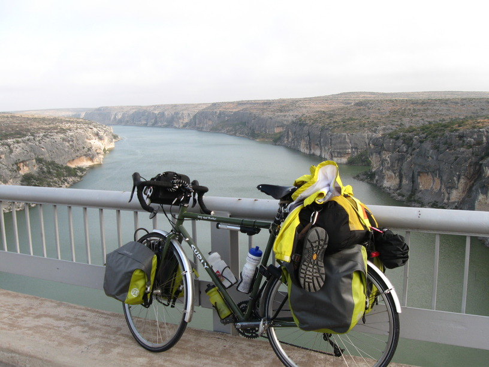
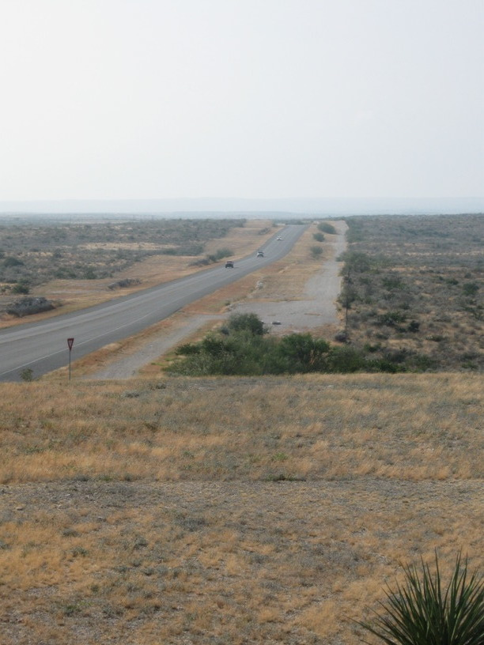
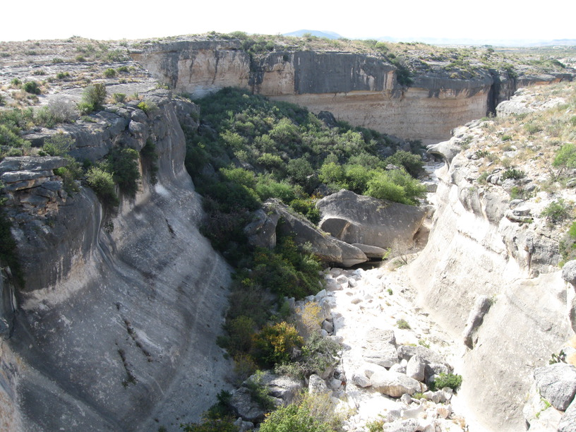
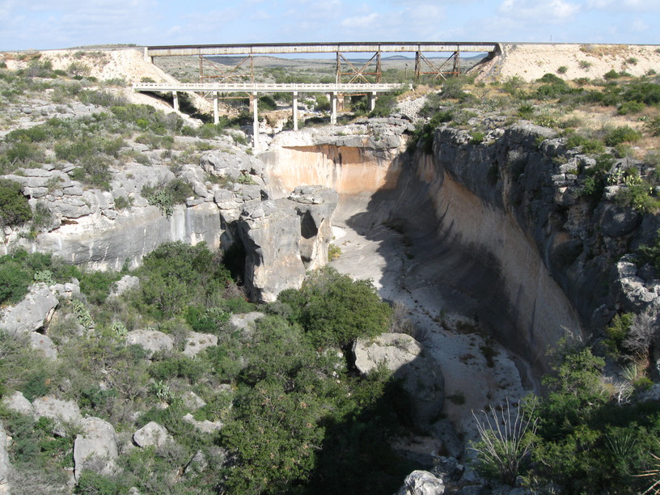
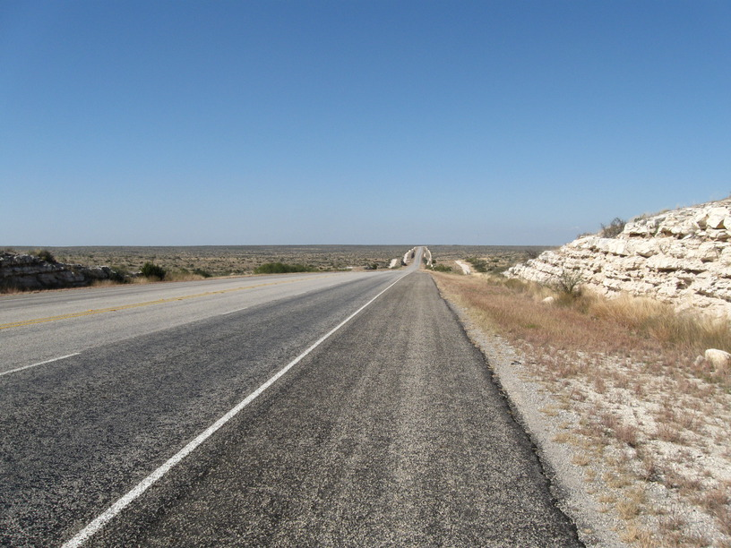
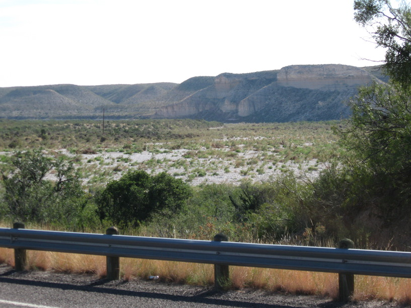
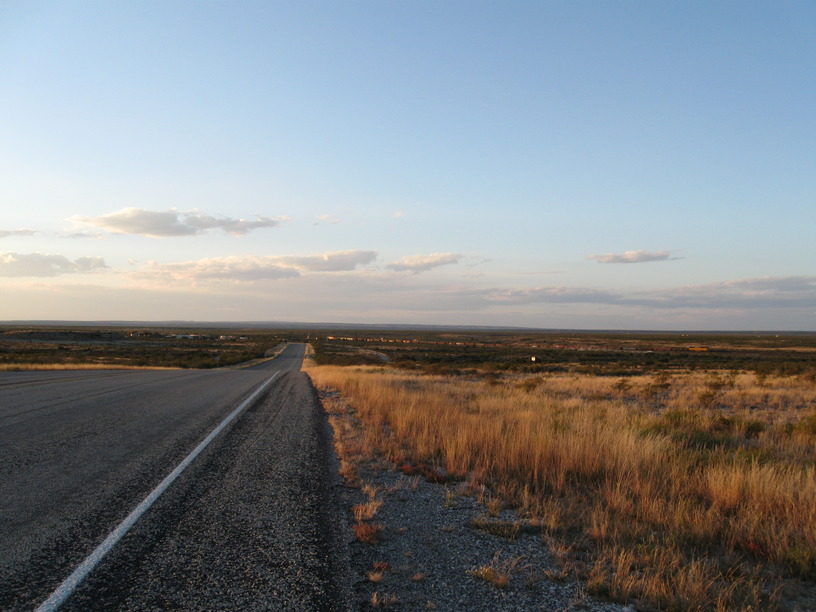